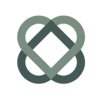
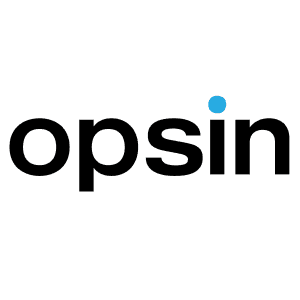
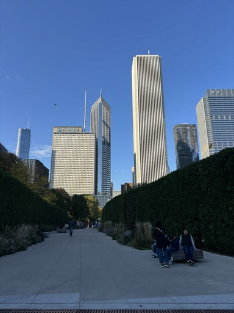
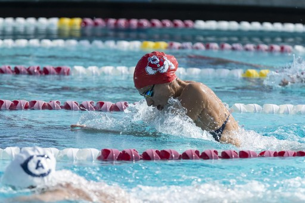
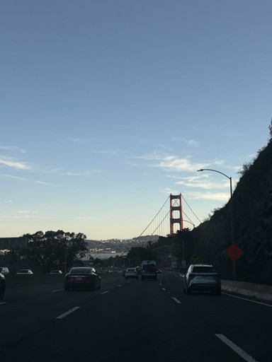
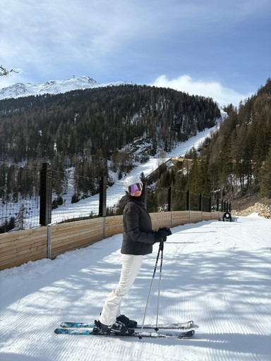
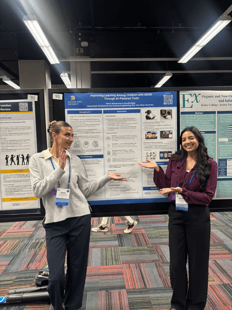

Hi, I'm Keren!
I make complex things feel simple.
I spent nineteen years as a competitive swimmer, most of it as a Division I athlete. It's a strange sport: you spend hours perfecting something nobody else can see, just to shave off half a second. I think that's where I first learned to care about the small, invisible details that make something work.
In college, I studied psychology. I was drawn to the question of why people do what they do, not in an abstract way, but practically. Why does someone give up on a form halfway through? Why does one interface feel obvious and another feel like a chore? I didn't have a name for it yet, but I was already thinking like a designer.
I found my way into UX almost by accident, and it clicked immediately. It let me combine the two things I actually cared about: understanding people, and building things that work. Since then, I've designed everything from a security platform used by analysts under pressure, to a health platform built for new mothers looking for information they can trust. Different users, different stakes, same job every time: take something complicated and make it feel simple.
Today I lead product design at the Connecting Mothers Initiative, where I get to do the part of this job I love most: mentoring other designers and helping shape a product that makes something genuinely hard feel a little easier.
Experience
-

UX Designer → UX/Product Design Lead
-

UX Designer (contract)
-
UX Designer & Researcher (contract)
Outside of Work
I spent nineteen years as a competitive swimmer, including four as a Division I athlete — a sport that taught me discipline long before I knew what to do with it.
I'm also a certified Pilates instructor. Years of teaching taught me how to explain something complicated to a room full of people at very different skill levels, all at once — which turns out to be most of my job as a designer too.
Outside of that, I'm usually traveling (27 countries and counting), taking photos, making jewelry, or baking something.




